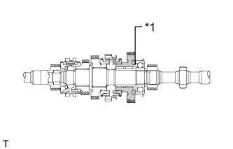
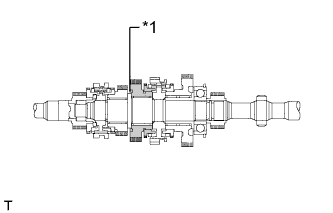
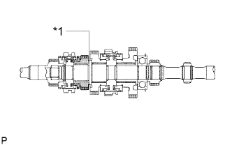
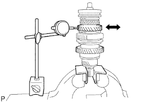
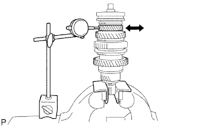

ВЫХОДНОЙ ВАЛ > РАЗБОРКА |
| 1. INSPECT 5TH GEAR THRUST CLEARANCE |
 |
Using a dial indicator, measure the thrust clearance.
| *1 | 5th Gear |
| 2. INSPECT 1ST GEAR THRUST CLEARANCE |
|  |
Using a dial indicator, measure the thrust clearance.
| *1 | 1st Gear |
| 3. INSPECT 2ND GEAR THRUST CLEARANCE |
|  |
Using a dial indicator, measure the thrust clearance.
| *1 | 2nd Gear |
| 4. INSPECT 3RD GEAR THRUST CLEARANCE |
|  |
Using a feeler gauge, measure the thrust clearance.
| *1 | 3rd Gear |
| 5. INSPECT 1ST GEAR RADIAL CLEARANCE |
 |
Using a dial indicator, measure the radial clearance.
| 6. INSPECT 2ND GEAR RADIAL CLEARANCE |
|  |
Using a dial indicator, measure the radial clearance.
| 7. INSPECT 3RD GEAR RADIAL CLEARANCE |
|  |
Using a dial indicator, measure the radial clearance.
| 8. REMOVE 1ST GEAR |
Using 2 screwdrivers and a hammer, tap off the snap ring from the output shaft.
Using SST and a press, remove the 5th gear, center bearing, 1st gear bearing inner race, 1st gear and 1st gear needle roller bearing from the output shaft.
| 9. REMOVE NO. 1 SYNCHRONIZER RING (for 1st Gear) |
Remove the No. 1 synchronizer ring from the No. 1 clutch hub.
| 10. REMOVE 1ST GEAR BEARING INNER RACE LOCK BALL |
Using a magnet hand, remove the lock ball.
| 11. REMOVE 2ND GEAR |
Using SST and a press, remove the reverse gear, No. 1 transmission clutch hub, No. 1 synchronizer ring and 2nd gear.
| 12. REMOVE NO. 2 SYNCHRONIZER RING (for 2nd Gear) |
Remove the No. 2 synchronizer ring from the 2nd gear.
| 13. REMOVE 2ND GEAR NEEDLE ROLLER BEARING |
Remove the needle roller bearing from the output shaft.
| 14. REMOVE NO. 1 TRANSMISSION CLUTCH HUB |
Remove the 2 synchromesh shifting key springs.
Remove the reverse gear and 3 synchromesh shifting keys from the transmission clutch hub.
| *1 | No. 1 Synchromesh Shifting Key Spring |
| *2 | Reverse Gear |
| *3 | No. 1 Synchromesh Shifting Key |
| *4 | No. 1 Transmission Clutch Hub |
| 15. REMOVE 3RD GEAR |
Using a snap ring expander, remove the snap ring from the output shaft.
Using a press, remove the No. 2 transmission clutch hub and 3rd gear.
| 16. REMOVE NO. 1 SYNCHRONIZER RING |
Remove the No. 1 synchronizer ring from the 3rd gear.
| 17. REMOVE 3RD GEAR NEEDLE ROLLER BEARING |
Remove the needle roller bearing from the output shaft.
| 18. REMOVE NO. 2 TRANSMISSION CLUTCH HUB |
Remove the 2 synchromesh shifting key springs.
Remove the transmission hub sleeve and 3 synchromesh shifting keys from the transmission clutch hub.
| *1 | No. 2 Synchromesh Shifting Key Spring |
| *2 | No. 2 Transmission Hub Sleeve |
| *3 | No. 2 Synchromesh Shifting Key |
| *4 | No. 2 Transmission Clutch Hub |